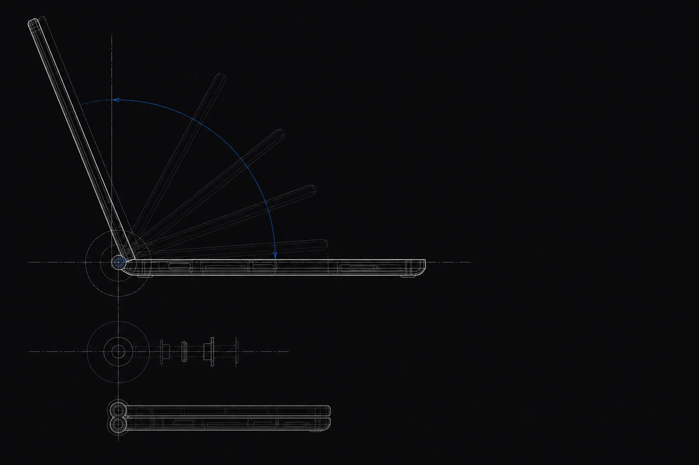

Selected Work

0.0
设计不是悬在空中的闭门思考。
从梳理项目需求与实际机器运作情况，到视觉交互，再到研发测试。
关于
在图纸与硬件的结合处工作。
就读于湖南师范大学设计系数字媒体方向。实习期间，先后在联想的 UIUX 组与百度的 AI 产品组做过一些工作。相比于单纯的产品 or 设计，我更希望自己是一名兼具全局产品观、精细化设计与交互执行力的用户体验设计师。
接触 AI 产品后，对设计的看法也有了新的认识，从一味追求设计审美，到 AI 时代我们的产品到底要解决什么样的问题，如何管理 AI 体验设计中的不确定性。进而通过用户洞察、逻辑拆解及跨团队协作，从业务目标和技术可行性出发来推进体验创新。结合自身的设计优势，利用动态视觉建立生动的反馈机制，让静态界面充满节奏感。更能够将理性逻辑与感性美学相融合，推动高品质产品落地。
Steve Jobs 曾说，用户不知道自己想要什么，直到你把产品放在他们面前。
我相信好的产品，从来都是与用户产生联系，并回馈以各个细节。
1.0